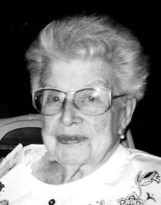

fiche familiale
*******************************************************************************
David Duhaime décède à l'âge de 94 ans
Naissance le 25 nov 1878
Décès le 25 nov 1972
Funérailles le 29 nov 1972 à Notre-Dame de Hull
Père: David Duhaime
Mère: Elisabeth Maheux
Mariage: 16 avr 1906 à Mattawa, cté Nipissing ON
Épouse: Olivine Villeneuve
Père: Pierre Villeneuve
Mère: Louise Séguin
*******************************************************************************
Enfant 1 Marie-Louise-Elizabeth Duhaime
décède à l'âge de 81 ans.
Naissance en 1908
Décès le 8 jan 1997 à Hull
Mariage le 27 sep 1927 à Hull
Conjoint: Adrien-René Charron
n. en 1907 d. en 1987
-------------------------------------------------------------------------------
|   |
Enfant 2 Maria Duhaime décède à l'âge de 98 ans. Naissance le 15 fév 1910 à Mattawa, cté Nipissing ON Décès le 9 juin 2008 à Résidence Champlain de Hull Mariage le 23 juin 1936 à St-Joseph de Hull Conjoint: Prosper Beaudoin n. 25 nov 1903 d. 7 déc 1985 (sa famille) |
Enfant 3 Bernadette Duhaime
Mariage le 31 mai 1937 à Hull
Conjoint: René Galipeau
-------------------------------------------------------------------------------
Enfant 4 Donalda Duhaime
décède à l'âge de 45 ans.
Naissance en 1916
Décès en 1961
Mariage le 22 oct 1936 à Hull
Conjoint: Roland Demers
décède à l'âge de 74 ans.
n. en 1916
d. en 1990
-------------------------------------------------------------------------------
Enfant 5 Philippe Duhaime
Décès en 1997
Mariage le 1 sep 1945 à St-Raymond-de-Pennafort de Hull
Conjointe: Clairette Pichette
d. en 2001
-------------------------------------------------------------------------------
Enfant 6 René Duhaime
décède à l'âge de 92 ans.
Naissance en 1926
Décès en 2018
Mariage le 5 jul 1952 à Hull
Conjointe: Pierrette Myre
-------------------------------------------------------------------------------
Enfant 7 Denise Duhaime
décède à l'âge de 65 ans.
Naissance en 1932
Décès en 1997
Mariage le 4 sep 1954 à St-Raymond-de-Pennafort de Hull
Conjoint: Jacques Desjardins
décède à l'âge de 83 ans.
n. en 1931
d. en 2014
-------------------------------------------------------------------------------
Enfant 8 Arsidas Duhaime
Mariage le 31 déc 1945 à Très-Saint-Rédempteur de Hull
Conjointe: Thérèse Roy
*******************************************************************************
| Début de la page | Page précédente | Page des ancêtres | Page d'accueil |